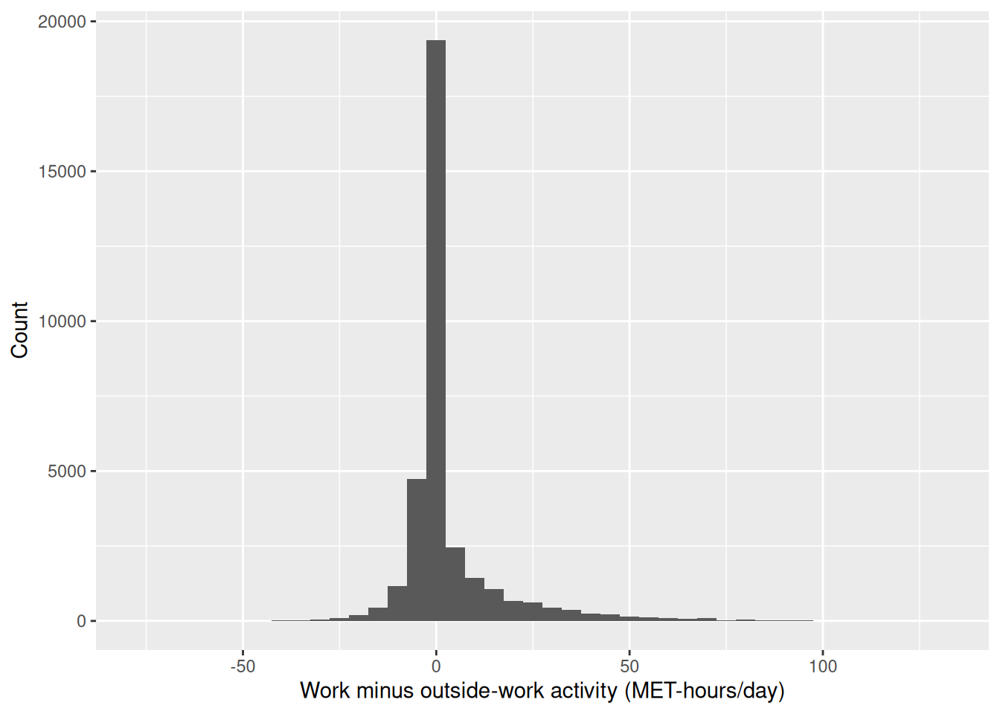
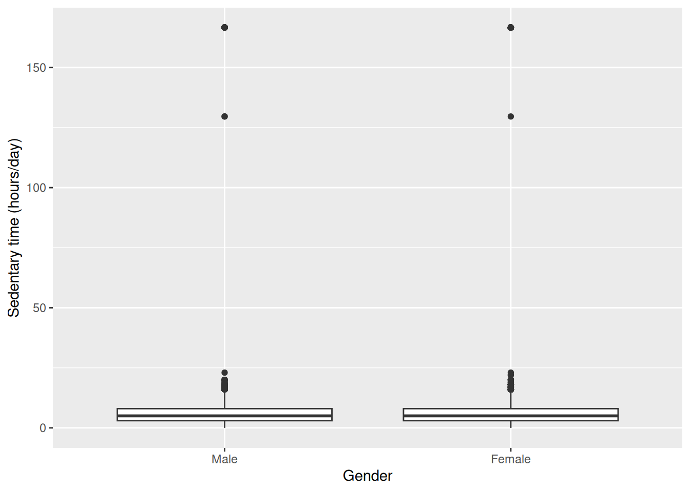
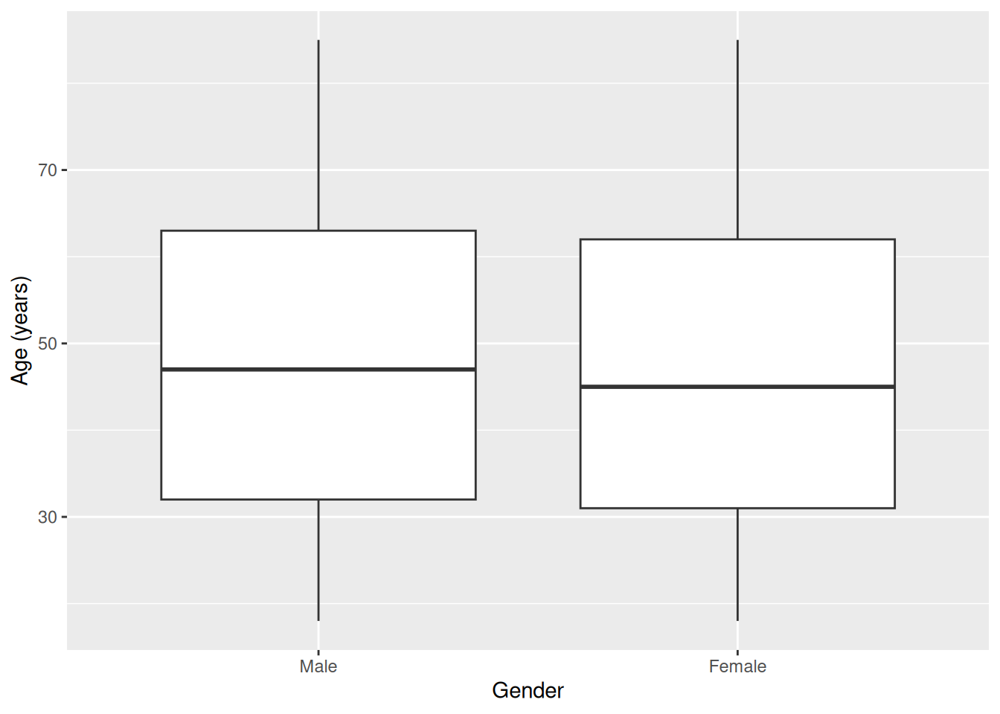

library(readr)
library(dplyr)
library(ggplot2)
library(gtsummary)
library(here)
library(medicaldata)
library(epitools)
nhanes <- read_csv(here("data", "mph_nhanes_20241107.csv"))
dictionary <- read_csv(here("data", "mph_nhanes_20241107_dictionary.csv"))5 Hypothesis tests and measures of association (IES Week 9)
This week sets out the logic of a hypothesis test: stating a null and an alternative hypothesis, turning a test statistic into a p-value, and being precise about what a p-value is. It also shows that a confidence interval and a hypothesis test carry the same information, and it establishes the reporting standard we use from here on: an effect size, a 95% confidence interval, and a p-value, reported together. Finally, it revisits risk ratio and odds ratio from epidemiology, attaching a confidence interval and a p-value to numbers we can already calculate by hand. In this session we run these tests in R and practise writing up each result the way a public health journal expects.
5.1 Chapter intended learning outcomes
By the end of this session you will be able to:
- Perform and interpret an independent-samples t-test in R
- Perform and interpret a paired t-test, recognise from a data structure which is required, and distinguish paired measurements taken over time from two related measurements taken at once
- Construct a contingency table and perform a chi-squared test
- Obtain risk ratios and odds ratios with confidence intervals
- Write up a result in the style expected in a public health journal
5.2 Setup
As in Weeks 7 and 8, we read the data with read_csv() and turn the six coded variables into factors against the dictionary. We also bring back strep_tb, from the medicaldata package, for the categorical half of this chapter.
This chapter adds one new package, epitools. If epitools isn’t already on your machine, run install.packages("epitools") once in the console, not inside this document. Once it’s installed, library(epitools) below makes its functions available for this session.
As in Week 8, dictionary is read in even though no code below refers to it. It’s there so it’s to hand the moment we’re unsure what a column means.
nhanes <- nhanes |>
mutate(
gender = factor(gender,
levels = c(1, 2),
labels = c("Male", "Female")),
eth = factor(eth,
levels = c(1, 2, 3, 4, 5),
labels = c("Mexican American", "Other Hispanic", "White", "Black", "Others")),
edu = factor(edu,
levels = c(1, 2, 3),
labels = c("Less than high school", "High school graduate", "Above high school")),
smoking = factor(smoking,
levels = c("Never", "Previous", "Current")),
phq.c = factor(phq.c,
levels = c("0 Normal", "1 Mild symptoms", "2 Possible depression"),
labels = c("Normal", "Mild symptoms", "Possible depression"),
ordered = TRUE),
blm.cvd = factor(blm.cvd,
levels = c(0, 1),
labels = c("No", "Yes"))
)This is the same recode we introduced in Weeks 7 and 8. See Week 7 for the reasoning behind each variable.
5.3 Independent-samples t-test: cholesterol by gender
t.test() compares two independent groups directly. We already used it in Week 8 to build a confidence interval for the difference in total cholesterol (chol, in mmol/L) between men and women:
t.test(chol ~ gender, data = nhanes |> filter(!is.na(gender)))
Welch Two Sample t-test
data: chol by gender
t = -15.318, df = 38908, p-value < 2.2e-16
alternative hypothesis: true difference in means between group Male and group Female is not equal to 0
95 percent confidence interval:
-0.1901172 -0.1469821
sample estimates:
mean in group Male mean in group Female
4.885939 5.054489 This is the exact same call as Week 8’s. t.test() was already giving us a hypothesis test; Week 8 just hadn’t introduced hypothesis testing yet, so we only looked at the confidence interval. Now we bring the rest into view: a t-statistic, degrees of freedom, and a p-value.
Before trusting a t-test, it’s worth checking that the two groups aren’t wildly different in spread or shape, the way Week 7’s boxplot of chol by gender already let us do:
ggplot(nhanes |> filter(!is.na(gender)), aes(x = gender, y = chol)) +
geom_boxplot() +
labs(x = "Gender", y = "Total cholesterol (mmol/L)")Warning: Removed 2589 rows containing non-finite outside the scale range
(`stat_boxplot()`).
The two boxplots are similar in spread and shape, just shifted slightly. Nothing here rules out a t-test. If, instead, the shape of the boxplot looks very different between the two groups, a t-test might not be appropriate, since it only compares the sample means. t.test() also doesn’t assume equal variance between the two groups by default, which protects us even where the spreads differ more than they do here.
Before reading the interval, check the direction, exactly as Week 8 set out. The alternative-hypothesis line says group Male and group Female, because "Male" is the first level of gender, so R has printed men minus women and both ends come out negative. Reversing every sign together turns it into the more natural reading: mean total cholesterol was about 0.17 mmol/L higher in women than in men (95% CI: 0.15 to 0.19 mmol/L, p < 0.001). The two statements are the same result written from a different perspective. This is the reporting standard the seminar introduced: effect size, confidence interval, and p-value, together, every time, from here on. p < 0.001 is how we write a p-value that R prints as something like < 2.2e-16. Convention in public health (or clinical medicine) reports a very small p-value this way rather than typing out the full number.
5.4 Paired t-test: two domains of activity in one person
nhanes_mph records physical activity as two separate totals for each participant, both in MET-hours/day: met_w, activity at work, and met_r, activity outside work, exactly as the dictionary describes it. These are two different domains of activity, measured at the same time, in the same person.
That distinction decides which test applies. An independent-samples t-test, like the one we just ran on chol by gender, compares two separate groups of people. Here we have one group of people, each measured twice. The right tool is a paired t-test. Rather than comparing the two columns directly, it collapses them into a single column of within-person differences (met_w minus met_r) and tests whether that difference is, on average, zero.
t.test() runs a paired test when we set paired = TRUE:
t.test(nhanes$met_w, nhanes$met_r, paired = TRUE)
Paired t-test
data: nhanes$met_w and nhanes$met_r
t = 43.111, df = 34284, p-value < 2.2e-16
alternative hypothesis: true mean difference is not equal to 0
95 percent confidence interval:
2.927984 3.206905
sample estimates:
mean difference
3.067444 On average, work activity ran about 3.07 MET-hours/day higher than activity outside work (95% CI: 2.93 to 3.21 MET-hours/day, p < 0.001).
A paired t-test also arises in a before-and-after design, where the same measurement is taken at two time points on the same person. That is a different study design from the one here, even though the R code looks identical. There is no repeated measurement over time in this data, and describing the result as though there were would misdescribe the study and plant a habit that causes real trouble in a longitudinal design later on.
We can also get the paired t-test result by running an ordinary one-sample t-test on the differences directly, testing whether met_w - met_r has a mean of zero:
t.test(nhanes$met_w - nhanes$met_r)
One Sample t-test
data: nhanes$met_w - nhanes$met_r
t = 43.111, df = 34284, p-value < 2.2e-16
alternative hypothesis: true mean is not equal to 0
95 percent confidence interval:
2.927984 3.206905
sample estimates:
mean of x
3.067444 The t-statistic, degrees of freedom, and p-value are identical to the paired test above. That’s not a coincidence: paired = TRUE is doing exactly this calculation internally, collapsing the two columns into one column of differences first.
5.5 A non-parametric alternative: the Wilcoxon signed-rank test
A paired t-test assumes the within-person differences are at least roughly normally distributed. Let’s check that assumption directly, the way we checked spread with a boxplot earlier:
ggplot(nhanes |> mutate(met_diff = met_w - met_r), aes(x = met_diff)) +
geom_histogram(binwidth = 5) +
labs(x = "Work minus outside-work activity (MET-hours/day)", y = "Count")Warning: Removed 7480 rows containing non-finite outside the scale range
(`stat_bin()`).
The distribution of differences is heavily skewed, and a large share of participants sit exactly at zero. Many people report no occupational activity at all, so met_w and met_r are equal for them. This is exactly the shape a paired t-test’s normality assumption doesn’t cope well with.
wilcox.test(), from base R, tests the same null hypothesis (no systematic difference within the pair) without assuming a normal distribution. It works with the ranks of the differences rather than their average, so one extreme value or an oddly-shaped distribution can’t dominate the result the way it can dominate a mean. With paired = TRUE, it runs the paired version, known as the Wilcoxon signed-rank test:
wilcox.test(nhanes$met_w, nhanes$met_r, paired = TRUE)
Wilcoxon signed rank test with continuity correction
data: nhanes$met_w and nhanes$met_r
V = 169408552, p-value < 2.2e-16
alternative hypothesis: true location shift is not equal to 0The conclusion doesn’t change here: both tests reject the null hypothesis convincingly, each with a p-value far below 0.001. With a sample this large, the t-test and the Wilcoxon test agree despite the skew. That won’t always be true. With a smaller sample, or a more extreme distribution, the two tests can disagree, and the non-parametric result is usually the one to trust when the normality assumption is in real doubt.
5.6 Chi-squared test: strep_tb’s primary result
strep_tb’s primary outcome is binary: did chest X-ray improve at six months (improved), and does that depend on trial arm (arm)? table() builds a two-way count, the same way it did in Week 7, and chisq.test(), from base R, tests whether the two variables are associated:
tab_arm <- table(strep_tb$arm, strep_tb$improved)
tab_arm
FALSE TRUE
Streptomycin 17 38
Control 35 17chisq.test(tab_arm, correct = FALSE)
Pearson's Chi-squared test
data: tab_arm
X-squared = 14.176, df = 1, p-value = 0.0001665The chi-squared statistic is large and the p-value is small: the proportion improved is not the same in the two arms. A p-value alone doesn’t say by how much; the risk ratio and odds ratio below put a size on that difference.
Before trusting a chi-squared test, it’s worth checking the assumption behind it. Every expected count should be reasonably large, conventionally at least 5. chisq.test() calculates these expected counts internally and stores them in $expected:
chisq.test(tab_arm, correct = FALSE)$expected
FALSE TRUE
Streptomycin 26.72897 28.27103
Control 25.27103 26.72897All four expected counts are comfortably above 5, so the test is on solid ground here. When expected counts run low, typically in a small or very unevenly split sample, fisher.test(), also from base R, tests the same association exactly rather than by approximation, and doesn’t depend on that condition.
It’s worth saying what correct = FALSE actually switches off. Left alone on a 2×2 table, chisq.test() applies Yates’ continuity correction by default: a conservative adjustment that shrinks the test statistic slightly, to compensate for approximating whole-number counts with a smooth curve. It makes the p-value larger.
We’ve already met it without being told what it was. Week 8’s prop.test() on these same two arms was headed “with continuity correction” too, and printed a p-value of 0.0003548. The uncorrected test above gives 0.000166: same data, same comparison, two different numbers, purely from this one default.
The correction earns its place when expected counts run low, typically down around 5 to 10. Ours aren’t: the smallest expected count is above 25. So we switch it off here, and it’s also what makes this p-value match the one epitools reports for the same table in the next section.
5.7 Fisher’s exact test
fisher.test(), mentioned above as the alternative when expected counts run low, is worth trying on this table too, even though nothing here required it. The call looks just like chisq.test():
fisher.test(tab_arm)
Fisher's Exact Test for Count Data
data: tab_arm
p-value = 0.0002218
alternative hypothesis: true odds ratio is not equal to 1
95 percent confidence interval:
0.08866883 0.52737127
sample estimates:
odds ratio
0.2207311 The p-value, 0.0002218, is close to the chi-squared test’s 0.000166 but not identical: the two tests approximate the same underlying question in different ways, and only agree exactly by coincidence. Both lead to the same conclusion here, a clear association between arm and improvement. riskratio() and oddsratio(), met below, report a Fisher’s exact p-value of their own for the same table, so this number will reappear.
On a larger table, with many categories rather than the 2×2 shape here, fisher.test() can become slow, because it enumerates every possible table with the same row and column totals to work out the exact probability. If it runs too slowly or refuses with an error on a bigger table, adding simulate.p.value = TRUE switches it to a Monte Carlo estimate instead of the exact calculation, trading a small amount of precision for speed. That isn’t needed here.
5.8 Risk ratios and odds ratios, with confidence intervals
The epidemiology half already taught how to calculate a risk ratio and an odds ratio from a 2×2 table like tab_arm above, and what each one means. We don’t re-derive those formulas here. What’s new is attaching a confidence interval and a p-value to numbers we can already compute by hand, and checking that R’s version agrees with ours.
riskratio() and oddsratio(), both from epitools, take a 2×2 table and compare its rows, treating the first row as the reference category everything else is measured against.
They expect the table a particular way round, and that’s worth knowing before building one, because getting it wrong produces a perfectly ordinary-looking answer rather than an error. The exposure goes in the rows, with the reference group first. The outcome goes in the columns, and the second column is taken as the event: the thing whose risk we’re comparing. Our table has arm in the rows and improved in the columns, and improved holds TRUE/FALSE values, which table() orders FALSE then TRUE, so improvement lands in the second column exactly as needed. Print the table and look at it before passing it on. If the reference row or the event column is the wrong one, these functions still return a risk ratio, just an upside-down one.
levels(), from base R, lists a factor’s categories in their current order, which is exactly what we need to check before comparing rows:
levels(strep_tb$arm)[1] "Streptomycin" "Control" Streptomycin is listed first, which would make it the reference, backwards from what we want here. relevel(), met in Week 7 when we checked the reference level on eth, moves the level named in ref to the front, making it the new reference level. There we were only demonstrating it; here it changes the answer:
arm_control_ref <- relevel(strep_tb$arm, ref = "Control")
levels(arm_control_ref)[1] "Control" "Streptomycin"Control is now first, so it becomes the reference row: the one everything else is compared against. This is the same reference level idea we met with factors in Week 7, now doing real work rather than being demonstrated on a copy, and it’s worth having used twice before Week 11, where setting a sensible reference level is part of fitting a regression model.
We rebuild the table with the releveled factor, and pass it to riskratio():
tab_arm_releveled <- table(arm_control_ref, strep_tb$improved)
tab_arm_releveled
arm_control_ref FALSE TRUE
Control 35 17
Streptomycin 17 38riskratio(tab_arm_releveled)$data
arm_control_ref FALSE TRUE Total
Control 35 17 52
Streptomycin 17 38 55
Total 52 55 107
$measure
risk ratio with 95% C.I.
arm_control_ref estimate lower upper
Control 1.000000 NA NA
Streptomycin 2.113369 1.377267 3.242893
$p.value
two-sided
arm_control_ref midp.exact fisher.exact chi.square
Control NA NA NA
Streptomycin 0.0001868959 0.0002217708 0.000166482
$correction
[1] FALSE
attr(,"method")
[1] "Unconditional MLE & normal approximation (Wald) CI"oddsratio() works the same way. We ask for method = "wald", which uses the same normal-approximation logic behind the ± 1.96 × SE intervals from Week 8, and which matches the simple cross-product formula from the hand calculation directly:
oddsratio(tab_arm_releveled, method = "wald")$data
arm_control_ref FALSE TRUE Total
Control 35 17 52
Streptomycin 17 38 55
Total 52 55 107
$measure
odds ratio with 95% C.I.
arm_control_ref estimate lower upper
Control 1.000000 NA NA
Streptomycin 4.602076 2.038863 10.3877
$p.value
two-sided
arm_control_ref midp.exact fisher.exact chi.square
Control NA NA NA
Streptomycin 0.0001868959 0.0002217708 0.000166482
$correction
[1] FALSE
attr(,"method")
[1] "Unconditional MLE & normal approximation (Wald) CI"From the table above: 38 of 55 patients improved in the streptomycin arm (risk = 0.69), and 17 of 52 improved in the control arm (risk = 0.33). By hand, risk ratio = 0.69 / 0.33 = 2.11, and odds ratio = (38 × 35) / (17 × 17) = 4.60. Both match what riskratio() and oddsratio() just reported, with a confidence interval attached to each: a risk ratio of 2.11 (95% CI: 1.38 to 3.24) and an odds ratio of 4.60 (95% CI: 2.04 to 10.39). Neither interval comes close to including 1, the null value for both a risk ratio and an odds ratio, consistent with the chi-squared test above.
riskratio() and oddsratio() each also report three p-values alongside the estimate: a mid-p exact test, Fisher’s exact test, and a chi-squared test. All three agree closely here. The chi-squared one is 0.000166, exactly the p-value chisq.test(tab_arm, correct = FALSE) gave us above, to every digit printed. That’s the payoff from switching the continuity correction off: the same test, run by two different packages, now gives one number instead of two. Had we left the correction on, chisq.test() would have reported 0.0003548, the number Week 8’s prop.test() printed, while epitools reported 0.000166, and there’d be no way to tell from the output that the two functions had simply made different default choices.
5.9 gtsummary::tbl_summary() with a test attached
tbl_summary(), already met in Week 7, can attach a test to a stratified table with add_p(), piped on afterwards:
strep_tb |>
select(arm, improved) |>
tbl_summary(by = arm) |>
add_p()| Characteristic | Streptomycin N = 551 |
Control N = 521 |
p-value2 |
|---|---|---|---|
| improved | 38 (69%) | 17 (33%) | <0.001 |
| 1 n (%) | |||
| 2 Pearson’s Chi-squared test | |||
This single call reproduces the count, the percentage, and the p-value we built by hand above, in the one-line form we’ll reach for once the manual steps are familiar. The p-value matches to every digit because add_p() happens to default to the uncorrected chi-squared test here, the same choice we made by hand with correct = FALSE.
NoteTry it yourself: sample size and significance
Using slice_sample() from Week 8, take a 10% random subsample of nhanes (remember to set.seed() first, so the subsample is reproducible) and re-run the chol ~ gender t-test from earlier in this chapter on it. Compare the p-value and the confidence interval to the ones from the full sample. Write one sentence on what changed and one sentence on what this means for judging whether a small p-value reflects a large effect or simply a large sample.
5.10 Worked example: sedentary time by gender
Let’s bring the independent-samples t-test together on a research question we haven’t asked elsewhere in this chapter: does sedentary time (sed, in hours/day) differ between men and women?
ggplot(nhanes |> filter(!is.na(gender)), aes(x = gender, y = sed)) +
geom_boxplot() +
labs(x = "Gender", y = "Sedentary time (hours/day)")Warning: Removed 7331 rows containing non-finite outside the scale range
(`stat_boxplot()`).
t.test(sed ~ gender, data = nhanes |> filter(!is.na(gender)))
Welch Two Sample t-test
data: sed by gender
t = -2.2193, df = 33827, p-value = 0.02648
alternative hypothesis: true difference in means between group Male and group Female is not equal to 0
95 percent confidence interval:
-0.48830744 -0.03028725
sample estimates:
mean in group Male mean in group Female
6.430592 6.689889 The boxplots overlap substantially, with similar spread in each group, so a t-test is reasonable here too. R prints the difference men minus women once again, so the interval on the page runs from -0.49 to -0.03. Written as it would appear in a results section, with the whole thing reversed: women reported slightly more sedentary time than men (mean difference about 0.26 hours/day, 95% CI: 0.03 to 0.49 hours/day, p = 0.026). The interval is entirely on one side of zero, so the difference is statistically significant, but it’s a small effect on a scale of many hours a day.
5.11 Exercises
Exercise 1 (ILO 1). Perform an independent-samples t-test comparing age (age) between men and women. Check the assumption graphically first with a boxplot. Write one sentence reporting the result as it would appear in a results section, and one sentence commenting on whether a statistically significant result here is also a practically important one.
Exercise 2 (ILO 2). Using filter(), restrict nhanes to participants whose sedentary time (sed) is above the sample median. On this subgroup, run both a paired t-test and a Wilcoxon signed-rank test comparing met_w and met_r. Write one sentence stating whether your conclusion changes in this more sedentary subgroup, and one sentence explaining why met_w and met_r are still a paired comparison here, not an independent one, even after filtering.
Exercise 3 (ILO 3). Construct a contingency table of baseline cavitation (baseline_cavitation) against improvement (improved) in strep_tb. Run a chi-squared test, check the expected counts, and write one sentence interpreting the result.
Exercise 4 (ILOs 4, 5). Using the same method as the arm/improved example above, check with levels() which category of gender is already the reference, then use relevel() to set it explicitly (even if it turns out to already be the one you want). Obtain a risk ratio and an odds ratio, each with a 95% confidence interval, for improvement in men compared with women. Reconcile the software output with a hand calculation from the same 2×2 table, and write a two-sentence results statement.
5.12 Writing exercise
Using the arm/improved result from earlier in this chapter, write two sentences, as they would appear in a results section, for strep_tb’s primary outcome. State the proportion improved in each arm, and report the risk ratio or the odds ratio (your choice), its 95% confidence interval, and its p-value, together.
NoteSolutions
Exercise 1
ggplot(nhanes |> filter(!is.na(gender)), aes(x = gender, y = age)) +
geom_boxplot() +
labs(x = "Gender", y = "Age (years)")
t.test(age ~ gender, data = nhanes |> filter(!is.na(gender)))
Welch Two Sample t-test
data: age by gender
t = 4.0035, df = 41503, p-value = 6.251e-05
alternative hypothesis: true difference in means between group Male and group Female is not equal to 0
95 percent confidence interval:
0.3702765 1.0805737
sample estimates:
mean in group Male mean in group Female
47.89355 47.16813 This time R’s interval is already positive, and that’s informative: the difference is still men minus women, so a positive interval means the first group is the higher one. Men in this sample were on average about 0.7 years older than women (95% CI: 0.4 to 1.1 years, p < 0.001), and no signs need reversing to say so. The difference is statistically significant but tiny relative to a population averaging around 47 years old. With a sample this large, tens of thousands of participants, even a very small true difference will produce a small p-value. Statistical significance here is not the same as a practically important difference, and it doesn’t really contradict Week 7’s impression that age looked similar across the two groups.
Exercise 2
sed_above_median <- nhanes |>
filter(!is.na(sed), sed > median(sed, na.rm = TRUE))
t.test(sed_above_median$met_w, sed_above_median$met_r, paired = TRUE)
Paired t-test
data: sed_above_median$met_w and sed_above_median$met_r
t = 7.4471, df = 16724, p-value = 1e-13
alternative hypothesis: true mean difference is not equal to 0
95 percent confidence interval:
0.3593059 0.6160133
sample estimates:
mean difference
0.4876596 wilcox.test(sed_above_median$met_w, sed_above_median$met_r, paired = TRUE)
Wilcoxon signed rank test with continuity correction
data: sed_above_median$met_w and sed_above_median$met_r
V = 25597758, p-value < 2.2e-16
alternative hypothesis: true location shift is not equal to 0Both tests still reject the null hypothesis in this more sedentary subgroup, though the mean difference is much smaller than in the whole sample (about 0.49 MET-hours/day here, versus about 3.07 MET-hours/day overall). met_w and met_r remain two measurements taken on the same person at the same time, so the comparison is paired regardless of filtering.
Exercise 3
tab_cavitation <- table(strep_tb$baseline_cavitation, strep_tb$improved)
tab_cavitation
FALSE TRUE
no 17 28
yes 35 27chisq.test(tab_cavitation, correct = FALSE)
Pearson's Chi-squared test
data: tab_cavitation
X-squared = 3.6399, df = 1, p-value = 0.05641chisq.test(tab_cavitation, correct = FALSE)$expected
FALSE TRUE
no 21.86916 23.13084
yes 30.13084 31.86916All expected counts are comfortably above 5, the smallest being just under 22, so correct = FALSE is the right call here, for the same reason it was for the arm table.
The chi-squared test gives a p-value of about 0.056. That’s above the conventional 0.05 threshold, but only just, and it would be a mistake to read much into which side of it the number landed on. The honest reading is the same either way: this is weak evidence of an association between baseline cavitation and improvement. The data don’t establish a relationship, but they don’t rule one out either. A trial of 107 patients simply cannot settle a question this size, and the result is best reported as inconclusive.
Exercise 4
levels(strep_tb$gender)[1] "F" "M"gender_f_ref <- relevel(strep_tb$gender, ref = "F")
tab_gender <- table(gender_f_ref, strep_tb$improved)
tab_gender
gender_f_ref FALSE TRUE
F 31 28
M 21 27riskratio(tab_gender)$data
gender_f_ref FALSE TRUE Total
F 31 28 59
M 21 27 48
Total 52 55 107
$measure
risk ratio with 95% C.I.
gender_f_ref estimate lower upper
F 1.000000 NA NA
M 1.185268 0.8215655 1.709979
$p.value
two-sided
gender_f_ref midp.exact fisher.exact chi.square
F NA NA NA
M 0.3745488 0.4378977 0.365451
$correction
[1] FALSE
attr(,"method")
[1] "Unconditional MLE & normal approximation (Wald) CI"oddsratio(tab_gender, method = "wald")$data
gender_f_ref FALSE TRUE Total
F 31 28 59
M 21 27 48
Total 52 55 107
$measure
odds ratio with 95% C.I.
gender_f_ref estimate lower upper
F 1.000000 NA NA
M 1.423469 0.6619167 3.061208
$p.value
two-sided
gender_f_ref midp.exact fisher.exact chi.square
F NA NA NA
M 0.3745488 0.4378977 0.365451
$correction
[1] FALSE
attr(,"method")
[1] "Unconditional MLE & normal approximation (Wald) CI"levels() shows that "F" is already listed first, so relevel() here confirms that choice explicitly. By hand, from the table: 27 of 48 men improved (risk = 0.5625) and 28 of 59 women improved (risk = 0.4746), giving a risk ratio of 0.5625 / 0.4746 = 1.19, and an odds ratio of (27 × 31) / (21 × 28) = 1.42. Both match the software output. The proportion improved was slightly higher in men than in women (risk ratio 1.19, 95% CI: 0.82 to 1.71; odds ratio 1.42, 95% CI: 0.66 to 3.06, chi-squared p = 0.37), but both confidence intervals include the null value of 1, so this trial gives no good evidence of a difference in improvement by gender. oddsratio() prints three p-values, as it did for the arm table; the chi-squared one is quoted here because that’s the one that reconciles with chisq.test().
Writing exercise (sample answer)
Among patients receiving streptomycin, 69% (38 of 55) showed radiological improvement at six months, compared with 33% (17 of 52) among those receiving the control treatment. This corresponds to a risk ratio of 2.11 (95% CI: 1.38 to 3.24, p < 0.001): about twice the proportion improved with streptomycin compared with control in this trial.